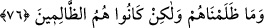

76. Biz onlara zulmetmedik, fakat onlar kendileri zâlim kimselerdir.
Böyle yapmakla “biz onlara zulmetmedik, fakat onlar” küfür ve mâsiyetleri
sebebiyle nefislerini ebedî azâba arz ettikleri için “kendileri zâlim kimselerdir.”
Âyetteki “hüm” zamiri, Basralılara göre kendisinden sonraki kelimenin sıfat olmayıp
haber olduğunu ortaya koyan zamîr-i fasıldır. Kûfeliler bu zâmire direk ve sütun
mânâsında “imâd” demişlerdir. Çünkü bu zamir; evin direk ve sütunları evin dam ve
tavanını düşmekten koruduğu gibi, kendisinden sonra gelen kelimenin haberlikten
düşmemesini sağlamaktadır.
77. Cehennemin muhâfızına: Ey Mâlik! Rabbin bizim işimizi bitirsin! diye
seslenirler. Mâlik de: Siz böyle kalacaksınız! der.
“Cehennemin muhâfızına: Ey Mâlik, Rabbin”e sor ve O’ndan iste “bizim işimizi
bitirsin,” bizi öldürsün de rahat edelim “diye seslenirler.”
Bir kişi diğerini öldürdüğü zaman “
/kadâ aleyh” denilir. Mânâ şöyledir: “Ey
Mâlik Rabbinden bize ölümle hükmetmesini iste!” Bu durum, onların daha önce
tamamen ümid kesmiş olmalarıyla çelişmez. Çünkü bu durum, bir ümid değil, azâbın
şiddetinden dolayı feryâd ü figân edip ölümü temennî etmekten ibarettir.
Onların kırk sene yalvarmasından sonra Mâlik, bu kırk sene sonunda yahut yüz sene
sonra veya bin sene sonra cevâben: “Siz” burada bekleyip ebediyen “böyle
kalacaksınız, der.” Tibyân’da, “o sarayın âhiret günleriyle kırk gün sonra…” kaydı
geçmektedir. Çünkü cevâbın gecikmesi onları iyice hüzne boğacaktır.
“
/meks” bir beklenti içinde olarak bekleyip kalmaktır. Yani “sizler bu azapta
ebedî kalacaksınız. Ölüm yahut başka hiçbir sûretle buradan kurtulmanız mümkün
değildir.”
Böyle tepkili bir cevaptan sonra onlar tamamen feryâd ü figânı basacaklar. Feryatları
merkep anırması gibi öncesi anırma, sonu çirkin bir soluma tarzında bir feryâd
olacaktır.
78. Andolsun biz size hakkı getirdik, fakat çoğunuz haktan hoşlanmıyorsunuz.
“Andolsun biz size” dünyada peygamberler gönderip kitaplar indirmekle “hakkı